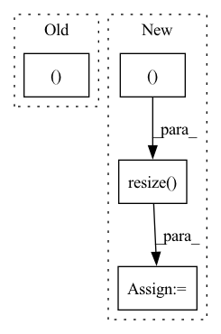

Pattern ID :35680
Before Change
self.output_dir, self.img_path.split("/")[-1][:-4]+"_animated.mp4")
video_writer = cv2.VideoWriter(
file_name, cv2.VideoWriter_fourcc(*"MP4V"), 40,
(self.args.canvas_size, self.args.canvas_size ))
for i in range(len(self.final_rendered_images)):
frame = (self.final_rendered_images[i][:, :, ::-1] * 255.).astype(np.uint8)
video_writer.write(frame)
After Change
out_img = cv2.resize(self.img_, (out_w, out_h), cv2.INTER_AREA)
plt.imsave(file_name+"_input.png", out_img)
for i in range(len(self.final_rendered_images)):
out_img = cv2.resize( self.final_rendered_images[i], (out_w, out_h ), cv2.INTER_AREA)
plt.imsave(file_name + "_rendered_stroke_" + str((i+1)).zfill(4) +
".png", out_img)
In pattern: SUPERPATTERN
Frequency: 6
Non-data size: 4
Instances Fragment ID: 101566925
Project Name: jiupinjia/stylized-neural-painting
Commit Name: b6349c27c04c152964adc9f0c79c84a307ef848f
Time: 2020-11-20
Author: 51430557+jiupinjia@users.noreply.github.com
File Name: painter.py
M Class Name: PainterBase
N Class Name: PainterBase
M Method Name: _save_rendered_images(1)
N Method Name: _save_rendered_images(1)
M Parent Class:
N Parent Class:
M File Name: painter.py
N File Name: painter.py
M Start Line: 104
M End Line: 116
N Start Line: 105
N End Line: 130
Before Change
hor_pad = hor_residual // 2
if len(img.shape) == 3:
padding = (
(vert_pad, vert_residual - vert_pad),
(hor_pad, hor_residual - hor_pad),
(0, 0) ,
)
else:
// If grayscale, cv.resize will drop the last dimensionAfter Change
if use_pil_for_resizing:
// https://github.com/pytorch/vision/blob/7cf0f4cc1801ff1892007c7a11f7c35d8dfb7fd0/torchvision/transforms/functional_pil.py//L240
img_pil = Image.fromarray(img)
img_pil = img_pil.resize(
(resized_w, resized_h ), resample=Image.BICUBIC
)
img = np.array(img_pil)
else:
img = cv.resize(
img, (resized_w, resized_h), interpolation=cv.INTER_CUBIC Fragment ID: 101566924
Project Name: lakeraai/onnx_clip
Commit Name: edb198d8b14891cd88132a1072c01d74e477b6a2
Time: 2023-01-31
Author: vv@lakera.ai
File Name: onnx_clip/preprocessor.py
M Class Name: Preprocessor
N Class Name: Preprocessor
M Method Name: _smart_resize(2)
N Method Name: _smart_resize(2)
M Parent Class:
N Parent Class:
M File Name: onnx_clip/preprocessor.py
N File Name: onnx_clip/preprocessor.py
M Start Line: 33
M End Line: 77
N Start Line: 44
N End Line: 81
Before Change
masks = [
np.array(Image.fromarray(m).resize((width, height), Image.NEAREST)) for m in masks
]
return frames, masks
class RandomCrop(object):
def __init__(self, parameters):After Change
frames = [
np.array(Image.fromarray(f).resize((width, height), Image.BILINEAR)) for f in frames
]
depths = [
np.expand_dims(np.array(
Image.fromarray(d.squeeze()).resize( (width, height ), Image.BILINEAR) ),
axis=2) for d in depths
]
masks = [ Fragment ID: 101566927
Project Name: hzxie/rmnet
Commit Name: f2f1bb1173f92817fb43222e870a07e61add9c76
Time: 2020-05-08
Author: root@haozhexie.com
File Name: utils/data_transforms.py
M Class Name: Resize
N Class Name: Resize
M Method Name: __call__(4)
N Method Name: __call__(3)
M Parent Class: object
N Parent Class: object
M File Name: utils/data_transforms.py
N File Name: utils/data_transforms.py
M Start Line: 148
M End Line: 154
N Start Line: 131
N End Line: 155
Before Change
outputs, img_info = self.predictor.inference(img_rgb)
// print(outputs)
result_img_rgb, bboxes = self.predictor.visual(outputs[0], img_info)
print(bboxes)
cv2.imshow("window",result_img_rgb)
cv2.waitKey(1)After Change
def imageflow_callback(self,msg:Image) -> None:
try:
img_rgb = self.bridge.imgmsg_to_cv2(msg,"bgr8")
img_rgb = cv2.resize( img_rgb,(self.input_width,self.input_height ))
outputs, img_info = self.predictor.inference(img_rgb)
try: Fragment ID: 101566922
Project Name: ar-ray-code/yolox-ros
Commit Name: 01fbddcc49a3964d17766a809deca2491a7562c8
Time: 2021-07-22
Author: ray255ar@gmail.com
File Name: yolox_ros_py/scripts/yolox_ros.py
M Class Name: yolox_ros
N Class Name: yolox_ros
M Method Name: imageflow_callback(2)
N Method Name: imageflow_callback(2)
M Parent Class: Node
N Parent Class: Node
M File Name: yolox_ros_py/scripts/yolox_ros.py
N File Name: yolox_ros_py/scripts/yolox_ros.py
M Start Line: 174
M End Line: 187
N Start Line: 220
N End Line: 244
Before Change
cap.set(1, start)
nb_frames = 0
while True:
ret, img = cap.read()
assert ret, "exception: {}, start={}, length={}".format(path, start, length)
if crop_augment: pass
if mirror_augment: img = cv2.flip(img, 1)After Change
if len(frames) > 0: img = frames[-1]
else: img = np.zeros((112, 112, 3), dtype=np.uint8)
if crop_augment:
img = cv2.resize( img, (128, 128 ))
if is_training:
crop_x = random.randint(0, 16)
crop_y = random.randint(0, 16)
img = img[crop_y: crop_y + 112, crop_x: crop_x + 112] Fragment ID: 101566912
Project Name: sailordiary/m3f.pytorch
Commit Name: 639f60090b44d3fdb3b40ae0df467ffed523da9e
Time: 2020-02-01
Author: me@sailorzhang.com
File Name: models/dataset.py
M Class Name: AnonimousClass
N Class Name: AnonimousClass
M Method Name: load_video(7)
N Method Name: load_video(6)
M Parent Class:
N Parent Class:
M File Name: models/dataset.py
N File Name: models/dataset.py
M Start Line: 50
M End Line: 75
N Start Line: 47
N End Line: 70
Before Change
ax0.imshow(slide_image)
ax1.imshow(slide_image, alpha=0.5)
for ax in (ax0, ax1 ):
ax.set_xlim(0, slide_image.shape[1])
ax.set_ylim(slide_image.shape[0], 0)
ax0.tick_params("x", labelbottom=False)After Change
if extra_slide_dict:
extra_image = _get_slide_image_from_slide_dict(extra_slide_dict)
if extra_image.shape != slide_image.shape:
extra_image = cv2.resize(
extra_image, (slide_image.shape[1], slide_image.shape[0] ), interpolation=cv2.INTER_AREA
)
ax2.imshow(extra_image)
ax2.tick_params("x", labelbottom=False)
for ax in axes:
ax.set_xlim(0, slide_image.shape[1]) Fragment ID: 101566914
Project Name: microsoft/hi-ml
Commit Name: 7d96412236b0143b2f97ce452c8cdcd8b353bf50
Time: 2023-02-01
Author: 37396332+kenza-bouzid@users.noreply.github.com
File Name: hi-ml-cpath/src/health_cpath/utils/viz_utils.py
M Class Name: AnonimousClass
N Class Name: AnonimousClass
M Method Name: plot_heatmap_overlay(7)
N Method Name: plot_heatmap_overlay(6)
M Parent Class:
N Parent Class:
M File Name: hi-ml-cpath/src/health_cpath/utils/viz_utils.py
N File Name: hi-ml-cpath/src/health_cpath/utils/viz_utils.py
M Start Line: 179
M End Line: 192
N Start Line: 166
N End Line: 210